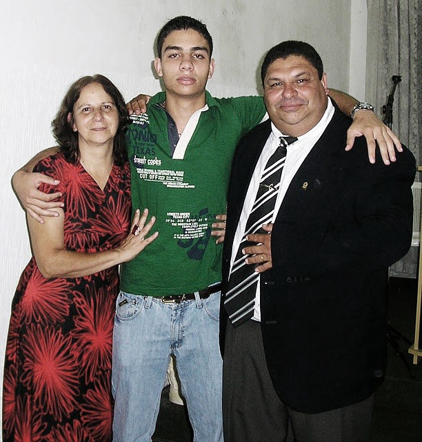

Eee Familia
Falar de minha familia é muito bom, pois tenho muitas familias, muitas mães e pais. Esses da foto são meus pais biologicos, que me criaram, que me amam muito e que eu os amo mais ainda, além de ter eles como o maior exemplo pra minha vida. Mas também tenho outros pais, meu sogro e minha sogra, e a familia Katzki, onde tenho pai, mãe e irmãos, além de sobrinhos, rs.